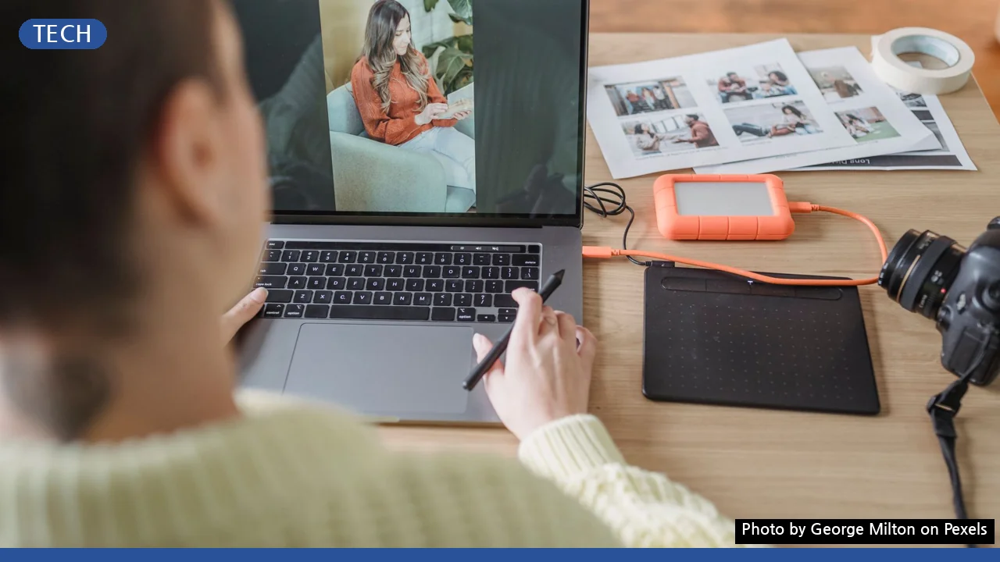

무료 vs 유료 이미지 편집, 놓치는 기능 없이 현명하게 선택하는 법
사진: George Milton / Pexels (무료 이미지, 출처 표기)
무료 이미지 편집 프로그램, 어떤 장점이 있을까?
사진이나 이미지를 편집하려 할 때, 가장 먼저 떠오르는 고민은 '어떤 프로그램을 써야 할까?'입니다. 특히 초기 비용 없이 바로 시작할 수 있는 무료 편집 프로그램들은 여러 면에서 매력적입니다. 가장 큰 장점은 물론 금전적인 부담이 없다는 점입니다. 복잡하지 않은 간단한 사진 자르기, 크기 조절, 색상 보정, 텍스트 추가 같은 작업에는 충분한 기능을 제공합니다.
또한, 많은 무료 프로그램은 웹 기반으로 제공되어 별도의 설치 과정 없이 인터넷 브라우저만 있다면 언제든 사용할 수 있습니다. 이는 PC 성능이나 운영체제에 구애받지 않고 유연하게 작업할 수 있다는 이점으로 작용합니다. 비전문가나 가볍게 취미로 이미지를 다루는 사용자에게는 매우 실용적인 선택지가 됩니다.
유료 프로그램이 제공하는 핵심 기능과 가치는?
무료 프로그램이 편리하지만, 전문적인 작업에서는 한계를 느낄 수 있습니다. 유료 이미지 편집 프로그램은 이 지점을 채워줍니다. 가장 대표적인 어도비 포토샵(Adobe Photoshop)을 포함한 유료 소프트웨어는 레이어(Layer) 및 마스크(Mask) 기능, 비파괴 편집(Non-destructive editing), RAW 파일(디지털 카메라 센서가 기록한 원본 데이터) 처리 등 고급 편집 기능을 제공하여 이미지의 품질을 최대한으로 끌어올릴 수 있습니다.
또한, 유료 프로그램은 일관된 사용자 인터페이스와 안정적인 성능, 그리고 지속적인 업데이트를 통해 최신 기능과 보안을 보장합니다. 전문가들은 작업 효율성을 높여주는 배치 처리(Batch processing)나 다양한 플러그인(Plug-in) 확장성을 중요하게 생각합니다. 어도비 포토샵의 경우 클라우드 동기화나 다른 어도비 제품군과의 연동을 통해 통합적인 작업 환경을 제공하기도 합니다.
내 작업에 맞는 프로그램 선택 가이드
무료와 유료 프로그램 중 어떤 것을 선택할지는 전적으로 사용자의 목적과 요구 사항에 달려 있습니다. 다음 질문들을 스스로에게 던져보며 최적의 선택을 해보세요.
- 주로 어떤 이미지를 편집하나요? (개인 사진, 블로그 콘텐츠, 상업용 디자인, 전문 사진 보정 등)
- 이미지 편집 숙련도는 어느 정도인가요? (완전 초보, 중급 사용자, 전문 디자이너)
- 어떤 운영체제(Windows, macOS, Linux)를 사용하며, PC 성능은 어느 정도인가요?
- 예산은 어느 정도로 생각하고 있나요? (구독형 서비스, 일회성 구매)
- 어떤 파일 형식(JPG, PNG, GIF, RAW, PSD 등)을 주로 다루나요?
간단한 취미 활동이나 소셜 미디어 콘텐츠 제작이라면 무료 프로그램으로 충분합니다. 하지만 인쇄물 제작, 고해상도 사진 편집, 복잡한 합성 작업 등 전문적인 결과를 원한다면 유료 프로그램을 고려하는 것이 현명합니다.
인기 무료/유료 이미지 편집 프로그램 비교
2026년 9월 기준, 시장에서 인기를 얻고 있는 주요 이미지 편집 프로그램들을 비교하여 어떤 프로그램이 당신에게 적합할지 판단하는 데 도움을 드립니다.
무료 프로그램 사용 시 주의할 점
무료 이미지 편집 프로그램을 사용할 때는 몇 가지 주의할 점이 있습니다. 우선, 기능 제한으로 인해 특정 고급 편집 기술이나 파일 형식이 지원되지 않을 수 있습니다. 예를 들어, RAW 파일의 심층적인 편집이나 복잡한 레이어 합성에는 한계가 있을 수 있습니다.
일부 무료 프로그램은 학습 곡선이 높을 수 있습니다. 직관적이지 않은 인터페이스나 부족한 한글 매뉴얼로 인해 사용법을 익히는 데 시간이 더 걸릴 수 있다는 의미입니다. 또한, 출처가 불분명한 프로그램을 다운로드할 경우 악성 코드나 보안 문제에 노출될 위험도 있습니다. 항상 신뢰할 수 있는 공식 웹사이트에서 다운로드하는 것이 중요합니다.
🔗 이 글도 함께 보면 좋아요: 포토샵 유료 구독 없이도 전문가처럼? 무료 이미지 편집 프로그램 5가지 비교
관련 추천 상품
이 포스팅은 쿠팡 파트너스 활동의 일환으로, 이에 따른 일정액의 수수료를 제공받습니다.